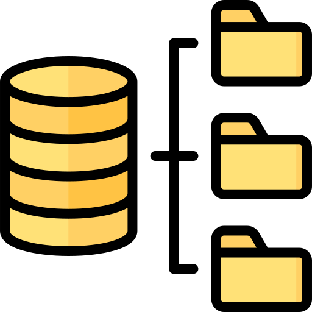
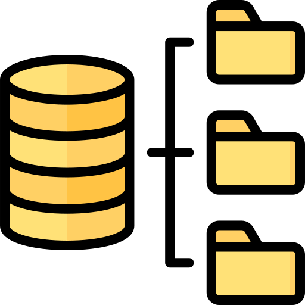

João Vitor de Oliveira dos Santos, 19 Anos
Meu nome é João Vitor, tenho 19 anos e sou estudante. Curso Sistemas de Informação e Analise e Desenvolvimento de Sistemas na Instituição Toledo de Ensino.
Atualmente Estou fazendo estagio de tecnico em informatica, na prefeitura de paulistânia. Cidade que moro. Meu trabalho é resolver problemas nos computadores, indo de Baixar um programa especifico. a conserto de hardware.
Nesse estagio tambem aprendi sobre maxima organizacao de documentos fisicos, e relacionamento interpessoal no local de trabalho. Sendo um dos meus trabalhos conversar para chegar a melhor solucao para a pessoa.
Voltando um pouco no tempo, Em 2022 me formei em Tecnico em Desenvolvimento de Sistemas, e Tecnico em informatica para internet. pela Etec, Onde começei a aprender logica de programação com PORTUGOL.

Linguagem de programação portugol
Nesses cursos aprendi linguagens como: HTML, CSS, JavaScript, PHP, CSharp, Java Mobile, Linguagem Sql, MySql e SqlServer.


 

Algumas das linguagens que aprendi.